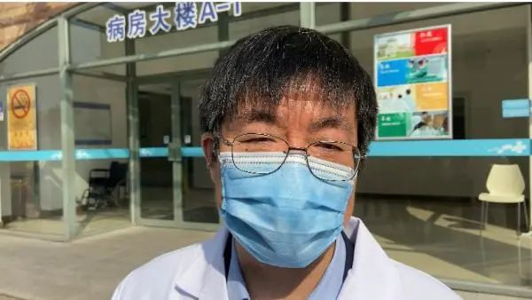

我在抗疫一线 在政治正确下治病救人(图) - 争鸣
原文链接 备份链接 临床一线的医护人员已被迫走在运动式的救治之路上，在大跃进的方向上迈进。（图片来源：STR/AFP via Getty Images） 【看中国2020年2月21日讯】武汉市的新冠肺炎人数继续攀升，救治任务依然严峻。管控 …
澎湃新闻记者 何颖晗 栾晓娜 陈斯斯
2月22日，上海16例新冠肺炎患者痊愈出院。如何救治重症患者，专家沈银忠接受澎湃新闻采访。澎湃新闻见习记者 邹桥 编辑 顾一帆(00:37)
2月22日上午9时30分，在上海市公共卫生临床中心，16例新冠肺炎患者经医护人员精心诊治和护理、专家组评估，认为符合国家卫生健康委最新的新型冠状病毒肺炎确诊病例解除隔离和出院标准，于当日出院。
值得一提的是，此次出院患者中有4名重症患者。

2月22日，上海市公共卫生临床中心，上海医疗救治专家组成员、复旦大学附属中山医院感染病科主任胡必杰接受采访。澎湃新闻见习记者 邹桥 图
据上海医疗救治专家组成员、复旦大学附属中山医院感染病科主任胡必杰透露，这几名重症患者中，有的曾严重缺氧、呼吸衰竭，有的用了机械通气，还有两个用了高流量吸氧。
“两名是65岁以上的老年病人，另外两名分别是47岁和52岁，没有达到老年标准却是重症，我们分析了原因。”他说，其中一名有糖尿病，另一名有冠心病，之前做过介入治疗。
“所以我们一直讲，要特别关注容易发生重症、危重症的病人，早期发现，早期干预，积极处置。”胡必杰告诉记者，这几名重症病人，也符合了之前的预判，一种是年纪大的，一种有基础性疾病的。
上海如何救治新冠肺炎重症患者？
胡必杰透露，在他们的治疗过程中，一方面是使用抗病毒药物进行治疗，即使用了上海自己的专家分析下来觉得比较好的几个药物；二是严格限制激素使用，即使使用，也是很小剂量很短时间（三天），因此大部分患者都比较好地维护了免疫功能。此外，还配合了肠道、睡眠、情绪等方面的管理，这些也都是比较关注的问题。
上海市公共卫生临床中心医务部主任感染与免疫科主任医师沈银忠进一步表示，对于重症患者的救治，主要是多学科团队的综合诊治和密切配合，包括重症科、呼吸科、ICU、中医等多团队。
“这类患者涉及的问题方方面面，如呼吸、心脏等，因此需要多个学科的团队一起努力。”沈银忠告诉记者，很多重症患者往往具有基础性疾病，如高血压、糖尿病等，如果能很好地控制好血压、血糖，那么对感染患者的恢复也是有帮助的。
同时，在救治过程中，一些新技术的应用也至关重要，如高流量吸氧、ECMO等。不过，22日出院的重症患者都没有使用ECMO，一般危重症患者可能会需要使用。
那么，对于有基础性疾病的患者来说，新冠肺炎的感染，是否会加重相应病症，并引发并发症？
“一个新的疾病，我们对它的认识是不断加深的过程。”沈银忠对此表示，一方面，如果患者有基础疾病，对于新冠肺炎的感染，会有加重的趋势，同等感染的病情，可能比别人更严重；另一方面，如果合并有新冠肺炎的感染，那么对糖尿病、高血压的控制，也可能产生一些不利的影响。
“这进一步证明了，这一类疾病的救治，需要多学科团队的配合。”他说。
戳这里进入
“全国新型冠状病毒感染病例实时地图”↓↓↓
本期编辑 邢潭
推荐阅读


原文链接 备份链接 临床一线的医护人员已被迫走在运动式的救治之路上，在大跃进的方向上迈进。（图片来源：STR/AFP via Getty Images） 【看中国2020年2月21日讯】武汉市的新冠肺炎人数继续攀升，救治任务依然严峻。管控 …
原文链接 备份链接 澎湃新闻记者 朱莹 钟笑玫 明鹊 实习生 刘昱秀 李振东与病魔斗争了16天后终于治愈出院，他希望自己的经验能给病友提供借鉴。记者：闫海龙 魏凡 编辑：曾怡文 视频来源：澎湃新闻(04:53) 这个冬天，新冠肺炎疾风般席 …
原文链接 备份链接 有时候半夜突然想到某个可能的漏洞，惊出一身冷汗。 记者 | 黄 祺 抗击新冠肺炎疫情的紧要关头，医院不能失守。 中国疾控中心2月17日的一份研究报告显示，全国已有3019名医务人员感染了新型冠状病毒，其中包括1716 …
原文链接 备份链接 【财新网】（记者 赵宁）北京大学人民医院（下称北大人民医院）有住院病人确诊为新冠肺炎的消息获得证实。与该医院相关确诊病例一共三人，分别为田某某、李某某、张某某，其中一人先由发热门诊排查，后又追溯发现了涉及医院老年科和肾 …
原文链接 备份链接 澎湃新闻记者 王选辉 实习生 刘宇丹 2月19日晚，北京朝阳医院副院长童朝晖、北京地坛医院感染二科主任医师蒋荣猛、中南大学湘雅医院感控科主任吴安华等三位中央指导组医疗救治组专家，就新冠肺炎重症救治召开新闻发布会，介绍了 …